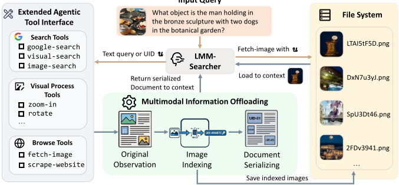
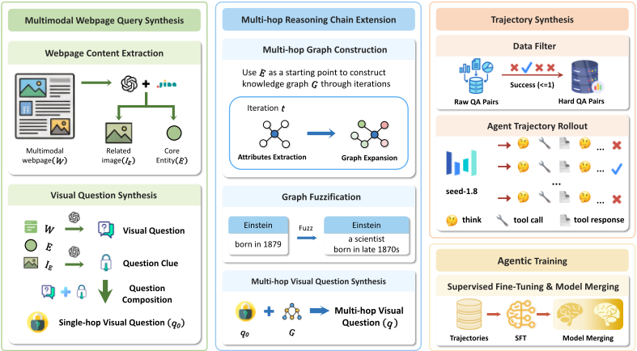
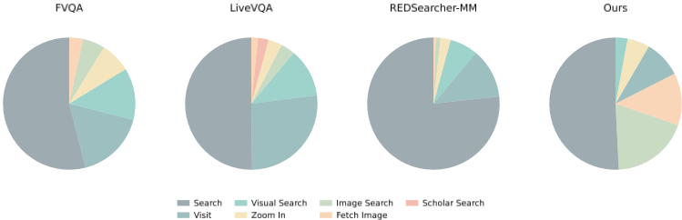
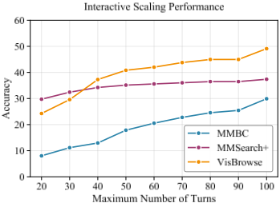
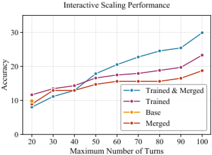
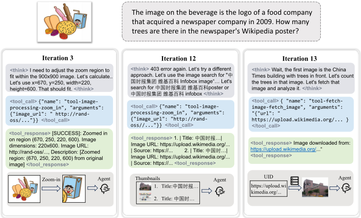

迈向长程 Agentic 多模态搜索
论文针对多模态深度搜索 Agent 在长程任务中的两大痛点——图像等重资产导致上下文爆炸、启发式丢弃中间图像导致关键视觉信号丢失——提出 LMM-Searcher 框架。核心做法是把所有视觉资产外置到外部文件系统并映射为轻量文本 UID，上下文中只保留 UID 代理，Agent 通过 fetch_image、zoom_in 等工具按需渐进加载图像，实现轻量长程推理与重视觉感知的解耦。同时构建多跳跨模态查询合成管线，蒸馏 12,736 条轨迹微调 Qwen3-VL-30B-A3B-Thinking，并与语言深度搜索模型 MiroThinker-1.7-mini 做参数合并。在四个基准上，30 turns 下 MM-BrowseComp 达 22.3、MMSearch-Plus 达 32.9，扩展到 100 turns 后达 30.1/34.8，为开源模型 SOTA；该框架对 Seed-1.8、GPT-5 等现成模型同样有效（GPT-5 在 MMSearch-Plus 提升 17.6%）。关键结论：文件化外置+按需加载能在不丢失信息的前提下支撑 100 turns 长程交互，消融证明 fetch_image 工具是关键组件。
多模态深度搜索 Agent 在长程迭代搜索中，图像/视频等多模态输入 token 成本高，多轮累积后造成上下文爆炸；而实践中常见的启发式做法（丢弃中间图像）又会丢失重要信号、破坏信息完整性，难以扩展到长程场景。已有面向文本历史的压缩与摘要式上下文管理方法不能直接迁移到多模态。论文的核心问题是：如何在深度搜索过程中有效处理与管理累积的多模态上下文，使 Agent 能扩展到 100 turns 级别的长程交互。
核心是文件化的长程多模态上下文管理，将感知与推理解耦：(1) 文件化多模态表示——所有视觉资产持久化存储在外部文件系统，与轻量文本 UID 建立严格一对一映射，网页内容被重组为要点+image-caption 对、图像替换为 URL 后才进入上下文，框架充当拦截中间件；已存在于互联网的图像直接复用其 URL 作为 UID。(2) 扩展 Agent 工具接口——将传统 eager loading 工具重新设计为 progressive loading，分三类：search tools（google_search/image_search/visual_search）、browse tools（scrape_website/fetch_image）、visual processing tools（zoom_in），形成 coarse-to-fine 感知漏斗；fetch_image 作为 UID 空间与视觉空间之间的桥梁支持按需主动感知，zoom_in 产物会连同新 UID 一起入上下文。(3) 数据合成管线——从多模态网页合成单跳视觉问题，再经多跳知识图谱扩展（含信息不可逆约束与节点模糊化）构造复杂查询，用 Seed-1.8 rejection sampling（40 turns、64K 上下文约束）蒸馏出 12,736 条轨迹。(4) 训练——对 Qwen3-VL-30B-A3B-Thinking 做多轮 SFT（mask 工具响应），并与 MiroThinker-1.7-mini 的语言部分做参数插值合并（α=0.8）。框架基于 MiroFlow 构建，训练用 LLaMA-Factory。
MM-BrowseComp 成功率 22.3、MMSearch-Plus 32.9（30 turns）；启用上下文管理扩展到 100 turns 后分别达 30.1 和 34.8，在开源模型中取得 SOTA
以 Seed-1.8 为基座时，MMSearch-Plus 达 46.7
框架对比实验（50 turns，相同模型换用不同框架）：Seed-1.8 在 MMBC 提升 13.7%、MMSearch-Plus 提升 35.7%；GPT-5 在 MMSearch-Plus 提升 17.6%
工具消融：移除 fetch-image 工具后，Seed-1.8 在 VisBrowse 从 58.0 降至 48.5，在 MMSearch 从 73.2 降至 71.0
数据合成管线共产出 12,736 条高质量训练样本，其所需交互轨迹显著长于现有开源多模态搜索数据集
交互扩展实验：基模型约 20 turns 即饱和，合成数据训练与语言模型合并后可持续扩展至 100 turns，MMBC 与 VisBrowse 在 100 turns 仍持续提升
相对已有工作的区别：(1) 已有上下文管理聚焦文本历史的压缩与摘要，无法处理多模态；启发式丢弃图像的方法造成不可逆信息丢失。本文受 planning-with-files 范式启发，提出文件化外置+UID 文本代理+按需加载，UID 作为持久、低成本的语义指针保证任何视觉资产都不会不可逆丢失。(2) 将多模态搜索工具从 eager loading 重新设计为 progressive loading，新增 fetch_image 作为 UID 空间与视觉空间之间的桥梁，形成 coarse-to-fine 感知漏斗。(3) 提出要求全程跨模态阅读网页的查询合成管线：多跳知识图谱扩展+信息不可逆约束+节点模糊化，防止模型走捷径直接检索答案。
相关度级别：high
命中能力域：3.1 上下文工程与记忆 | 3.3 Agent 架构与工具使用
理由：论文的核心贡献正是团队 3.1 域的典型技术：面向长程 Agent 的上下文窗口管理——用外部文件系统外置重资产、以轻量文本标识（UID）作为代理、按需渐进加载，替代压缩/摘要式上下文管理，并给出了生产可用的实现与消融证据。同时其工具接口设计（eager loading 改为 progressive loading、fetch_image 桥接、coarse-to-fine 感知漏斗）直接命中 3.3 域的 Agent harness 与工具调用设计。关键的是，该上下文管理策略不依赖微调即可在现成强模型（Seed-1.8、GPT-5）上带来显著提升，意味着团队可以只采纳框架层设计而不必复现训练部分。虽然论文场景是多模态网页搜索而非团队的代码/文档/知识库场景，但'轻引用+按需加载'的上下文管理模式可平移到团队任何需要处理截图、日志、大文件等重资产的长程 Agent。
建议动作：深入精读并做内部分享
arXiv:2604.12890v2 [cs.CV] 25 Apr 2026
Yifan Du 1 ∗ , Zikang Liu 1 ∗ , Jinbiao Peng 1 , Jie Wu 1 , Junyi Li 2 , Jinyang Li 1 , 1 † 1
Wayne Xin Zhao , Ji-Rong Wen
1 Gaoling School of Artificial Intelligence, Renmin University of China. 2 City University of Hong Kong.
yifandu1999@gmail.com , batmanfly@gmail.com
多模态深度搜索 Agent 通过迭代地收集文本和视觉证据，在解决复杂任务方面展现出巨大潜力。然而，在长程（long-horizon）场景下管理多模态输入所带来的异构信息与高昂 token 成本，仍然是一项关键挑战，因为现有方法常常面临上下文爆炸或关键视觉信号丢失的问题。为解决这一问题，我们提出了一种新颖的长程多模态深度搜索框架（Long-horizon Multi Modal deep search framework），命名为 LMMSearcher，其核心是一种基于文件的视觉表示机制。通过将视觉资产卸载到外部文件系统，并将其映射为轻量级文本标识符（UID），我们的方法在保留多模态信息以供后续访问的同时，降低了上下文开销。我们为该 Agent 配备了一个定制的 fetch-image 工具，使其能够采用渐进式、按需的视觉加载策略来实现主动感知。此外，我们引入了一个数据合成流水线，用于生成需要复杂跨模态多跳推理的查询。利用该流水线，我们蒸馏出 12K 条高质量轨迹，对 Qwen3-VL-Thinking30A3B 进行微调，将其打造为一个专用的多模态深度搜索 Agent。在四个基准测试（benchmark）上的大量实验表明，我们的方法能够成功扩展至 100 轮的搜索长程，在 MM-BrowseComp 和 MMSearch-Plus 等具有挑战性的长程基准测试上取得了开源模型中最先进（state-of-the-art）的性能，同时在不同的基座模型上也展现出强大的泛化能力。我们的代码将在 https://github.com/RUCAIBox/LMM-Searcher 发布。
深度搜索智能体（Agent）系统 [1, 2, 3] 在应对具有挑战性的真实世界信息获取问题方面取得了显著成功 [4, 5]。基于深度搜索框架，这些系统能够查询搜索引擎并浏览网页，以迭代的方式收集事实性证据，从而解决复杂任务。与传统搜索系统的一个关键区别在于，深度搜索系统通常经历一个长程的迭代推理与证据积累过程，逐步逼近给定问题的最终解决方案。近期工作通过引入图像搜索等专门的视觉工具，将这一范式扩展到了多模态搜索 Agent [6, 7, 8]。
然而，多模态搜索过程 [9] 与纯基于语言的搜索存在显著差异。在搜索和浏览过程中收集到的信息是异构的 [10, 11]，并且由于多模态输入（例如，图像或视频）的高昂 token 开销而面临上下文爆炸问题 [12,
∗ 同等贡献。
† 通讯作者
预印本。
13]。对于包含大量交互的长程任务而言，这一问题变得更加严重。以往专注于压缩和总结文本上下文历史的上下文管理方法，难以很好地迁移到深度多模态搜索中 [14, 15, 16]。与文本不同，多模态输入具有根本不同的数据格式与表示形式 [17, 18, 19, 20]，因此不能简单地将其当作文本压缩问题来处理。在实践中，人们常常采用启发式方法 [21]，通过丢弃中间图像数据来处理搜索结果。然而，这类策略可能导致重要信号的丢失，损害信息完整性，并使其难以扩展到长程深度搜索场景。这就引出了一个核心问题：在深度搜索过程中，我们如何有效地处理和管理不断积累的多模态上下文？
受基于文件的规划（planning-with-files）范式 [22, 23] 近期进展的启发，我们提出将多模态信息从上下文中卸载，并将其存储为外部文件。这样一来，这些文件便可在搜索与推理过程中被自适应地加载、分析或进一步操作，并逐步推进。这种方法在通过按需加载降低上下文开销的同时，为后续访问保留了完整的多模态信息。
为实现这一想法，我们提出了一种以基于文件的上下文表示机制为核心的长程多模态上下文管理方法，命名为 LMM-Searcher。具体而言，所有视觉资产——无论是从网页文档中检索得到的，还是由环境生成的——都被存储在外部文件系统中，并映射为唯一的文本标识符（UID），这些标识符还可以通过紧凑缩略图所提供的摘要语义加以补充。借助这些文本代理，智能体（agent）能够以极小的上下文代价在长程范围内跟踪多模态信息。为了充分利用这种表示，我们重新设计了传统的多模态搜索工具，并为智能体配备了一个新的定制工具 fetch-image，用于主动感知。基于这些设计，我们开发了一种渐进式多模态搜索工作流，使智能体仅在需要细粒度理解时才检索并加载特定的视觉内容。
此外，为了增强智能体在长程多模态搜索中的能力，我们开发了一条数据合成流水线，用于构建需要复杂跨模态多跳推理的查询。这些合成任务与开源深度搜索查询相结合，被用于从强大的教师模型中收集高质量轨迹，以进行智能体训练。基于这些训练数据，我们将 Qwen3-VL-Thinking-30A3B 微调为一个专门的多模态深度搜索智能体。
为了验证我们的方法，我们在四个多模态搜索基准测试上开展了大量实验。在具有挑战性的长程基准测试 MM-BrowseComp（MMBC）[24] 和 MMSearchPlus [25] 上，我们的方法分别取得了 22.3 和 32.9 的成功率。配备上下文管理策略后，我们的模型能够扩展至 100 轮，并分别取得 30.1 和 34.8 的性能，在开源模型中确立了最先进（state-of-the-art）的结果。除了经过训练的模型之外，我们的方法在提升模型智能体搜索能力方面也展现出优越性。具体而言，当应用于相同的基座模型时，我们的框架显著优于先前框架 [8]。基于 Seed-1.8，我们在 MMSearch-Plus 上取得了 46.7 的成绩，证明了我们方法强大的泛化能力。
我们的贡献总结如下：
基于语言的深度搜索智能体。基于语言的深度搜索智能体旨在通过 Input Query 引入外部搜索与检索机制 [29, 30, 31]，以应对大语言模型（LLMs）[26, 27, 28] 知识边界所带来的固有局限。早期研究通常采用检索增强生成（RAG）范式 [32, 33, 34, 35]，通过基于嵌入的方法 [36, 37] 从静态数据库中检索相关文档片段，从而实现精确的知识增强。后续研究通过为模型配备搜索工具 [3, 38, 2]，克服了预构建知识库的限制。这种集成直接赋予模型互联网搜索能力，并进一步提升了其在开放域问答中的表现 [4, 39]。然而，这些基于语言的智能体仅支持文本形式的搜索输入与反馈，限制了其在现实应用中解决多模态查询的能力。
多模态深度搜索智能体。与 LLMs 类似，多模态大语言模型（MLLMs）[40, 11, 41] 同样需要借助外部工具来处理复杂的现实世界任务。早期研究 [42, 43] 为模型配备了丰富的视觉与语言插件，包括用于目标检测 [44]、图像分割 [45] 和光学字符识别（OCR）[46] 的插件。这种设置使 MLLMs 能够根据复杂的用户指令自主调用合适的工具。在这一基础范式之外，近期研究将此类交互能力内化到模型的推理过程中，由此催生了 thinking-with-image 范式 [47, 48, 49, 50]。这类框架将视觉操作视为显式的推理步骤，从而在空间推理和细粒度视觉问答（VQA）方面带来了显著提升。在这些进展的基础上，近期工作 [6, 21, 7, 8] 将搜索引擎作为核心工具深度集成到 MLLMs 的推理链中。通过将强大的内部视觉推理与动态的外部搜索工具相结合，模型得以执行复杂的事实核查与开放域多模态探索。
2

我们首先提出一种上下文管理机制，它将基于文件的多模态表示与扩展的智能体工具接口相结合。该设计背后的核心动机是将感知与推理解耦。具体而言，视觉感知本质上是“重”的，而长程规划则需要“轻量”的上下文，以避免在多轮交互中出现 token 爆炸和噪声累积。基于这一洞察，我们的机制并非将原始多模态内容直接插入模型上下文，而是将所有视觉资产（本文中为图像）存储在外部文件系统中，并通过轻量级的文本标识符（UID）加以引用。在此设计基础上，我们为智能体配备了专门的工具，使其能够按需主动检索并处理相关视觉内容。该机制在保留细粒度感知能力、避免过度上下文消耗的同时，为多模态搜索智能体实现了长程交互。
在整个多模态搜索过程中，环境返回的每张图像都会被持久化地存储在外部文件系统中。为了保证智能体能够按需通过 UID 精确定位目标图像并随后将其加载到上下文中，必须在文件系统中建立 UID 与图像之间严格的一对一映射。形式化地，设 I 表示高维视觉空间，U 表示轻量级文本标识符（UID）的空间。文件系统定义了一个持久化的映射函数 f : I → U，使得每个被检索到的视觉资产 i ∈ I 都唯一地关联到一个 UID u = f ( i )。图2展示了在实践中网页内容是如何呈现给智能体的。
3
在 *Percy Jackson And The Olympians* 第二季第8集（大结局）中：
### 图像：
图2：返回给智能体的网页。其内容被重组为一种结构化表示，其中文本信息被总结为关键要点，视觉元素被转换为图像-描述对，而图像则被替换为其对应的 URL。
通过这种代理表示 u，视觉内容被转换为一种可在上下文中高效维护的轻量级文本形式。当需要进行细粒度的视觉检查时，智能体可以通过专用工具主动检索相应的图像。为了减少存储开销，如果某张图像已经存在于外部文件系统中（例如在互联网上）并带有有效标识符（例如 URL），我们直接复用现有的 UID，而不是分配新的 UID。
先前的多模态搜索框架 [8, 7] 集成了多种与搜索相关的工具。然而，这些工具往往遵循“急切加载”（eager loading）的设计范式，因为它们被设计为在检索到图像后立即将其加载到模型上下文中，从而导致上下文窗口迅速膨胀。为了在所提出的基于文件的表示下实现长程多模态搜索，我们重新设计了传统工具，使其基于 UID 的视觉引用进行操作。我们的工具设计遵循渐进加载（progressive loading）原则。所设计的工具接口包含三类工具：搜索工具（search tools）负责互联网搜索，浏览工具（browse tools）处理特定网页内容的提取与视觉感知，而视觉处理工具（visual processing tools）则用于对提取出的图像进行编辑和更细粒度的感知。这三类工具共同构成了一个由粗到细的感知漏斗。下面我们对各工具进行更详细的描述：
搜索工具（Search Tools）。我们集成了基于现有搜索引擎（例如 Serper）构建的开放域搜索工具，作为跨模态、多跳推理的入口。这套工具包括 google_search，它接受文本查询并检索相关文档；image_search，它接受文本输入并返回相关图像；以及 visual_search，它利用输入图像来识别视觉上相似的结果。这些搜索工具返回一组检索到的条目，包括文本片段、图像链接、缩略图以及对应的网页 URL。
浏览工具（Browse Tools）。我们引入了两个工具，用于访问网页和图像中的详细内容。第一个是 scrape_website，用于检索并总结网页内容。给定一个查询，摘要模型会生成文本摘要，同时提取并存储页面中的所有图像 URL。第二个是 fetch_image，专为主动视觉感知而设计。该工具充当 UID 空间 U 与视觉空间 I 之间的桥梁，从外部文件系统中检索与给定 UID u 对应的图像 i，并将其提供给模型进行细致检查。
4
视觉处理工具（Visual Processing Tools）。为了支持细粒度的视觉推理，我们引入了一个图像处理工具（即 zoom_in）。设 g 表示一个视觉变换。给定输入 UID u in，该工具将该变换应用于底层图像，生成一个新的视觉资产 i new = g ( f - 1 ( u in ))。随后，所得图像被上传至文件系统并被分配一个新的标识符 u new = f ( i new )。由于此类操作涉及主动感知并生成聚焦的视觉结果，i new 及其对应的 UID u new 会被同时插入上下文中。
基于基于文件的数据管理和扩展的工具接口，我们的智能体执行一种长时程搜索工作流。这一设计模拟了人类获取信息的范式：我们并不会在记忆中保存每份检索到的文档的高分辨率视觉细节；相反，我们记住信息所在的位置，并在需要时逐步加载。具体而言，在搜索任务中，当智能体调用 search tools 或 browse tools 时，来自环境的原始输出是一份交错包含文本与原始图像的文档 D。关键在于，在 D 进入智能体的上下文之前，我们的框架充当拦截中间件。它会自动索引 D 中的所有视觉条目，将其永久保存到文件系统，并通过将所有原始图像替换为其对应的 UID 来序列化该文档。因此，智能体只会接收到搜索结果的轻量化表示。通过在这一阶段用 UID 完全代理视觉内容，我们有效地解决了上下文爆炸问题。智能体可以在数十轮交互中维持庞大的搜索历史，而不会受到视觉 token 膨胀的困扰，从而成功地将轻量化的长时程推理与繁重的视觉感知解耦。
当智能体识别出需要对文本中提到的特定图像进行细粒度感知时，它会使用该 UID 自主调用 fetch_image 工具。此外，如果视觉推理需要更精细的感知与操作，智能体会触发视觉处理工具。这种动态交互确保繁重的感知严格按需发生。更重要的是，这一工作流为防止信息丢失提供了天然的可靠性保证。与激进地丢弃图像的启发式方法 [21, 8, 7] 不同，我们的框架确保任何视觉资产都不会被不可逆地丢失。UID 充当一个持久且低成本的语义指针；只要 UID 保留在推理链中，智能体就能保证在需要时回溯到外部文件系统中确切的、未压缩的视觉证据。
基于上述设计，我们旨在使模型具备利用这一多模态上下文管理机制的能力，并通过智能体训练（agentic training）增强其长程多模态搜索能力。具体而言，我们提出了一套完整的训练流程，涵盖查询合成、轨迹数据蒸馏与模型训练。先前数据合成工作 [8] 的一个主要瓶颈在于高质量查询的稀缺。现有数据集通常将多模态输入限制在初始搜索阶段（即显式图像查询），而在后续步骤中很少要求多模态推理，这从本质上限制了任务复杂度与轨迹质量。为克服这一问题，我们合成了复杂的查询，要求模型在整个搜索过程中主动阅读并理解网页中的多模态信息。具体来说，我们的流程首先从多模态网页合成视觉问答（Visual Question Answering, VQA）数据对（第 4.1 节），随后扩展推理链（第 4.2 节）；接着进行智能体轨迹合成（第 4.3 节），以生成用于模型训练（第 4.4 节）的最终数据。
为确保合成查询严格要求模型阅读多模态网页信息，我们选择视觉内容丰富的多媒体网站（例如新闻网站和电影网站）作为起点来合成单跳视觉问题。该过程包括网页内容提取和问题合成。
5

网页内容提取。给定一个多模态网页 W，我们使用 Jina 1 对其进行解析，并将其输入多模态大语言模型（MLLM），以提取网页中的核心实体 E 以及与 E 相关的图像 I E。基本原则是：I E 必须具有直接的图注或丰富的上下文，且 E 必须是唯一、无歧义的实体。详细提示词见附录。
视觉问题合成。基于 W、E 和 I E，我们提示 MLLM 合成一个与 I E 相关的视觉问题，其约束条件是该问题无法仅凭 W 中的文本信息得到回答。随后，我们提示 MLLM 依据网页 W 中所呈现的 E 与 I E 之间的关系，合成一条同时提及 E 和 I E 的线索。最后，将该线索与视觉问题相结合，我们得到单跳视觉问题 q 0。只有当搜索智能体成功导航至该特定网页时，问题 q 0 才能被回答，这迫使智能体在整个搜索过程中持续将所获取的各种多模态信息与给定线索进行比对。
为了增加先前所得查询的难度，我们基于 E 对推理链进行扩展。其基本思想是以 E 为起点构建一个记为 G 的多跳知识图谱，然后对 G 中的关键节点进行模糊化，最终生成一个扩展的多跳视觉问题 q。具体而言，该过程分为以下几个步骤。
多跳图谱构建。我们设计了一个工作流来迭代地构建多跳知识图谱。我们将知识图谱定义为有向图 G = ( V , E )，其中 V 表示节点集合，E ⊆ V × V 表示节点之间的连接（边）集合。图中的每个节点 v ∈ V 都维护一个扩展状态 S ( v ) ∈ { unexpanded , expanded }。初始时，图中仅包含一个孤立的根节点 v root = E，即 G (0) = ( V (0) , ∅ )，其中 V (0) = { v root } 且 S ( v root ) = unexpanded。在第 t 次迭代中，我们从当前图 G ( t - 1) 中选择一个未扩展的节点 v t ∈ V ( t - 1)（即出度为 0 的节点）。将该节点对应的实体记为 E t，我们提示大语言模型（LLM）基于知识源（离线数据库或互联网网页）中关于 E t 的搜索结果，提取一组属性 R t = { r 1 t , r 2 t , . . . , r t m }。接下来，LLM 根据图的密度和 v t 的深度，从 R t 中筛选出一个属性子集 ˆ R t（ˆ R t ⊂ R t）。该子集中的每条属性链接 r i t 都指向一个新的、可进一步扩展的目标实体 u i t。随后，我们将这些新节点和有向边加入图中。第 t 次迭代时的图扩展过程可以表示如下：
1 https://jina.ai
6
| Dataset | FVQA | LiveVQA | REDSearcher-MM | REDSearcher-Text | Ours |
|---|---|---|---|---|---|
| Num. of Samples | 2301 | 1672 | 3366 | 3808 | 1589 |
| Avg. Turns | 5.63 | 7.16 | 13.21 | 21.97 | 17.26 |
| Dataset | FVQA | LiveVQA | REDSearcher-MM | REDSearcher-Text | Ours |
更新完成后，节点 v t 的状态转变为 expanded，即 S ( v t ) = expanded。为了增加推理链的复杂度，我们对所选属性施加严格的信息混淆约束：对于 ˆ R t 中的任意单个属性 r i t，都不能仅凭其自身独立地反向推导出源实体 v t。这种信息不可逆性约束确保图中每条新增的边在最终的多跳推理中都发挥着不可或缺的作用，从而防止模型走捷径直接检索到答案。
图谱模糊化。在完成图谱构建后，我们从当前知识图谱 G 中选取叶节点以及入度/出度较低的节点所对应的实体，并将它们归入待模糊化的实体集合，记为 { F k } n k =1。这些实体缺乏可供参照的必要边，因此必须以模糊化的方式加以表示。我们随机选取目标实体 F k 的一个在图谱构建过程中未被使用的属性 r j k，并提示 LLM 对该节点进行模糊化。
多跳视觉问题合成。我们对构建好的图进行采样，得到包含核心实体 E 的子图 G ′。我们随机选取一个叶节点 E i，并将其替换为包含相应实体的显式图像。随后，我们提示大语言模型（LLM）将包含该显式图像的子图 G ′ 转换为一条以核心实体 E 结尾的自然语言推理文本。接着，LLM 将该推理文本插入先前合成的关于核心实体 E 的单跳视觉问题 q 0 中，从而合成出多跳视觉问题 q。
在合成查询之后，我们进一步构建用于训练的 Agent 轨迹。为了提高查询多样性并扩大数据规模，我们还额外引入了若干开源的搜索相关数据集，包括 FVQA [51]、LiveVQA [52]、REDSearcher-Text [8] 和 REDSearcher-MM [8]。遵循先前的研究 [53, 54]，我们实施了一个用于质量控制的初步过滤阶段。具体而言，我们首先使用 Qwen2.5-VL-7B [41] 过滤掉无需调用搜索引擎即可正确回答的查询。随后，剩余的查询被用于轨迹合成。我们使用 Seed-1.8 [55] 进行拒绝采样，仅保留在 64K 上下文长度约束下于 40 个交互轮次内成功回答查询的轨迹。该过程共产生 12,736 个高质量训练样本。详细的数据分布总结于表 1 中。值得注意的是，与现有数据集相比，我们的流水线所合成的数据需要明显更长的交互轨迹，这表明其具有更强的长程搜索特性。
为了验证我们的 Agent 框架与合成数据集的有效性，我们在 Qwen3-VL-30B-A3B-Thinking [41] 上进行了多轮监督微调（SFT），该模型是最先进的开源多模态大语言模型。在训练过程中，我们在计算交叉熵损失时对工具响应进行掩码，使模型仅针对推理过程与工具调用的生成进行优化。尽管我们已确保合成数据的高质量，但受其多模态特性影响，多模态搜索轨迹往往难以达到纯文本搜索轨迹的交互规模，这限制了所训练模型的规模化能力。受先前研究 [56, 57] 的启发，许多通用的规模化能力可以通过模型合并在语言模型与多模态模型之间进行迁移。因此，我们将训练得到的模型与 MiroThinker-1.7-mini [58] 进行合并；该模型与我们的目标模型共享相同的语言模型骨干，经过了大规模中期训练，并展现出强大的基于语言的深度搜索能力。合并过程专门应用于两个模型共有的语言模型部分。将我们训练的多模态模型记为 Θ V，将 MiroThinker-1.7-mini 记为 Θ T，最终的 LMM-Searcher-30B 模型通过参数插值获得：
7
| Model | MMBC | MMSearch+ | VisBrowse | MMSearch | Avg. |
|---|---|---|---|---|---|
| Direct Answer | Direct Answer | Direct Answer | Direct Answer | Direct Answer | Direct Answer |
| GPT-5 | 10.3 | 19.1 | 26.0 | 33.3 | 22.2 |
| Seed-1.8 | 13.0 | 8.6 | 18.9 | 31.0 | 17.9 |
| Kimi-K2.5 | 2.7 | 12.6 | 18.3 | 47.0 | 20.2 |
| Gemini-2.5-Pro | 10.3 | 14.5 | 27.2 | 39.8 | 23.0 |
| Gemini-2.5-Flash | 5.4 | 8.1 | 16.0 | 30.4 | 15.0 |
| Qwen3-VL-30B-A3B-Thinking | 7.1 | 2.7 | 13.0 | 17.7 | 10.1 |
| Agentic Search | Agentic Search | Agentic Search | Agentic Search | Agentic Search | Agentic Search |
| GPT-5 | 23.7 | 34.8 | 35.5 | 72.2 | 41.6 |
| Seed-1.8 | 25.5 | 46.7 | 58.0 | 73.2 | 50.9 |
| Kimi-K2.5 | 25.9 | 39.2 | 50.3 | 72.3 | 46.9 |
| Gemini-2.5-Pro | 12.1 | 28.1 | 16.0 | 66.3 | 30.6 |
| Gemini-2.5-Flash | 8.0 | 14.0 | 14.2 | 59.8 | 24.0 |
| Qwen3-VL-30B-A3B-Thinking | 9.8 | 14.4 | 16.0 | 62.0 | 25.6 |
| Multimodal Search Agent | Multimodal Search Agent | Multimodal Search Agent | Multimodal Search Agent | Multimodal Search Agent | Multimodal Search Agent |
| MMSearch-R1-7B | - | - | - | 53.8 | - |
| Webwatcher-7B | - | - | - | 49.1 | - |
| Webwatcher-32B | - | - | - | 55.3 | - |
| DeepEyesV2-7B | - | - | 63.7 | - | |
| Vision-DeepResearch-30B | - | 28.5 | - | 69.6 | - |
| REDSearcher-MM-30B | 23.5 | 26.6 | - | 72.9 | - |
| LMM-Searcher-30B | 22.3/ 30.1 ∗ | 32.9/ 34.8 ∗ | 42.0/ 48.3 ∗ | 71.0/72.3 ∗ | 42.1/ 46.4 * |
| Model | MMBC | MMSearch+ | VisBrowse | MMSearch | Avg. |
我们设置 α = 0 . 8，这在保留大部分多模态能力的同时融入了 MiroThinker-1.7-mini 的优势。关于模型合并的严格研究留待未来工作。
评估基准测试（benchmark）。我们在多个具有挑战性的视觉搜索基准测试上评估我们的模型。评估基准测试包括：MM-BrowseComp [24]、VisBrowse-Bench [59]、MMSearchPlus [25] 和 MMSearch [60]。遵循先前工作，为了公平比较，我们仅在 MMSearch-Plus 的单图像子集上进行评估。
基线方法。我们考虑三类基线方法：直接回答、Agent 工作流和多模态搜索 Agent。
8
| Model | Evaluation Method | MMBC | MMSearch+ | VisBrowse | MMSearch |
|---|---|---|---|---|---|
| GPT-5 | Direct Answer w. Previous Framework w. Our Framework | 10.3 - 36.5 | 19.1 17.2 34.8 | 26.0 - 35.5 | 33.3 63.7 72.2 |
| Seed-1.8 | Direct Answer w. Previous Framework w. Our Framework | 13.0 21.4 35.1 | 8.6 11.0 46.7 | 18.9 - 58.0 | 31.0 69.7 73.2 |
| Qwen3-VL-30B- A3B-Thinking | Direct Answer w. Previous Framework w. Our Framework | 7.1 10.7 9.8 | 2.7 13.6 14.4 | 13.0 - 16.0 | 17.7 53.2 62.0 |
| Model | Evaluation Method | MMBC | MMSearch+ | VisBrowse | MMSearch |
实现细节。我们基于 MiroFlow [62] 构建我们的框架，并将其同时用于轨迹展开（trajectory rollout）和答案验证。我们使用 LLaMA-Factory [63] 作为训练框架。我们训练模型 3 个 epoch，全局批大小（global batch size）为 64，学习率为 1e-5。在评估时，我们将最大长度设置为 128K，最大轮数设置为 30，以便与先前方法进行公平比较。我们还报告了将轮数扩展至 100 且仅保留最近 5 次工具调用结果时的成功率，这是 DeepSeek-V3.2 [64] 引入的一种上下文管理策略。
表 2 报告了在四个基准测试（benchmark）上的整体性能对比。首先，我们观察到一个一致的趋势：直接回答方法的性能显著低于基于 Agent 的方法，这凸显了在复杂多模态任务中工具调用与外部搜索的必要性。此外，我们的 LMM-Searcher-30B 与现有多模态搜索 Agent 相比取得了具有竞争力甚至更优的性能。特别地，LMM-Searcher-30B 在具有挑战性的 MMSearchPlus 基准测试上达到了 28.7，同时在 MM-BrowseComp 和 MMSearch 上保持了强劲且相当的性能。进一步地，当启用带上下文管理的长程交互（100 轮）时，LMM-Searcher-30B 在所有基准测试上均取得了一致的提升。值得注意的是，它在 MM-BrowseComp 和 MMSearch-Plus 上取得了最先进（state-of-the-art）的性能，证明了其在处理扩展推理与交互方面的有效性。总体而言，这些结果验证了我们方法在同时实现强大搜索能力、稳健多模态推理以及可扩展长程交互方面的优势。
为了验证我们上下文管理设计的泛化能力，我们在多个基准测试上评估了相同模型分别部署于我们的框架与先前的 REDSearcher [8] 和 Vision-DeepResearch 框架 [7] 时的性能。我们将最大交互轮数设置为 50，以更好地释放框架的潜力并确保公平比较。如表 3 所示，我们的框架在所有被评估模型上均一致地提升了平均性能。我们发现，视觉 Agent 能力较弱的模型（例如 Qwen3-VL30B-A3B-Thinking）仅表现出微小的提升，这表明对于较简单的 Agent 而言，固定的搜索-查看（search-and-look）工作流已经足够。然而，能力更强的模型在我们的框架下获益更为显著。例如，Seed-1.8 在 MMBC 上取得了 13.7% 的提升，在 MMSearch-Plus 上取得了 35.7% 的提升。此外，我们的方法在具有挑战性的任务上带来了最显著的改进。具体而言，它使 GPT-5 在 MMSearch-Plus 上提升了 17.6%，使 Seed-1.8 在 MMBC 上提升了 14.3%、在 MMSearch-Plus 上提升了 35.7%。这些结果凸显了我们框架在应对复杂、视觉多跳（multi-hop）问题方面的有效性。
9

工具调用分布。为了证明我们合成的查询本质上需要更密集的多模态搜索与浏览，我们分析了 agent 轨迹中工具调用的分布，并将其与现有开源多模态搜索查询所引发的分布进行比较。如图 4 所示，我们的查询触发了明显更多的 “visual search” 和 “image search”。更重要的是，在问题求解过程中，它们需要频率显著更高的 “fetch image” 步骤。这表明我们合成的查询要求对网页上的多模态内容进行更深入的检查，而不是仅仅依赖浅层的检索。


(b) 模型训练与合并的扩展结果。
图 5：交互式扩展结果。我们采用我们的上下文管理策略评估不同模型，并强制 agent 在 100 轮时停止。对于 x 轴上的每个交互轮数阈值，如果 agent 在该轮数内自主终止并给出正确答案，则将该样本计为成功，并据此计算相应的准确率。
交互式扩展。为了评估 LMM-Searcher 的交互式扩展行为，我们设置了不同的轮数上限，对超过阈值的交互进行截断并将其标记为未完成。我们的评估聚焦于两个方面：（1）LMM-Searcher-30B 在多种基准测试（benchmark）上的扩展性能；（2）不同模型变体（即 base、trained、merged 和 final）在 MMBC 上的比较。图 5 的结果表明，我们的模型在所有基准测试上都能持续受益于交互轮数的增加，尽管提升幅度各不相同，这表明不同任务需要不同的推理深度。值得注意的是，MMBC 和 VisBrowse 即使在 100 轮时仍在持续提升，这表明多模态搜索具有很强的扩展潜力。此外，图 5b 显示，尽管 base 模型在约 20 轮时便趋于饱和，但合成数据训练和语言模型合并都大幅增强了其扩展行为，而两者的结合则带来了进一步的增益。这些结果表明，我们的方法能够有效地将长时程（long-horizon）能力从基于语言的搜索迁移到多模态场景中。
数据消融。为了验证我们数据合成流水线的有效性，我们针对来自不同来源和模态的训练数据开展了消融实验。具体而言，我们考虑了开源多模态搜索查询（包括 FVQA、LiveVQA 和 REDSearcher-MM）、开源文本查询（REDSearcher-Text）以及我们合成的多模态搜索查询。每个数据集都在前一个训练集的基础上增量加入。训练完成后，我们通过模型合并将所得的检查点与 MiroThinker-1.7-mini 进行合并。如表 4 所示，仅使用开源多模态搜索查询进行训练，就已经能在智能体搜索性能上带来大幅提升。加入额外的文本查询主要在长程基准测试 MMBC 上带来收益，但会导致平均性能下降。这可能是因为额外文本查询所带来的收益已在很大程度上被通过模型合并继承而来的基于语言的搜索能力所覆盖。进一步引入我们合成的查询则在 MMBC 和 VisBrowse 上带来了额外提升，并最终在所有基准测试上取得了最佳的平均性能。
| MMBC | MMSearch+ | VisBrowse | MMSearch | Avg. | |
|---|---|---|---|---|---|
| Qwen3-VL-30B-A3B-Thinking | 9.8 | 14.4 | 16 | 62 | 25.6 |
| + Open-source Visual Query | 20.7 | 33.8 | 39.5 | 70.4 | 41.1 |
| + Open-source Textual Query | 21.6 | 32.4 | 39.1 | 70.3 | 40.9 |
| + Our Synthesized Query | 22.3 | 32.9 | 42 | 71 | 42.1 |
| | MMBC | MMSearch+ | VisBrowse | MMSearch | Avg. |
| MMBC | MMSearch+ | VisBrowse | MMSearch | Avg. | |
|---|---|---|---|---|---|
| Seed-1.8 | 9.8 | 14.4 | 16 | 62 | 25.6 |
| w/ fetch-image tool | 35.1 | 46.7 | 58 | 73.2 | 53.3 |
| wo/ fetch-image tool | 29.5 | 43.7 | 48.5 | 71 | 48.2 |
| ∆ | -5.6 | -3 | -9.5 | -2.2 | -5.1 |
| | MMBC | MMSearch+ | VisBrowse | MMSearch | Avg. |
工具消融。我们的方法与以往多模态深度搜索框架的一个核心区别在于：我们将搜索过程中遇到的所有多模态信息保存为文件，使智能体能够灵活地加载它们。实现这一操作的主要工具是 'fetchimage'。为了直接验证该工具的有效性，我们以 Seed-1.8 作为基础模型，在当前框架内对比了使用与不使用该工具时的性能。如表 5 所示，移除 fetch-image 工具会降低 Seed-1.8 在所有基准测试上的性能。最显著的下降出现在 VisBrowse 基准测试上，从 58.0 降至 48.5，这表明该基准测试高度依赖从网页中获取图像信息。相反，MMSearch 上的性能仅从 73.2 降至 71.0，说明该基准测试主要依赖搜索引擎结果，不需要智能体访问网页。
在本工作中，我们提出了 LMM-Searcher，一个能够解决复杂多模态查询的开源多模态深度搜索智能体。我们构建了一种长时程多模态上下文管理机制，结合基于文件的视觉表示与精心设计的智能体视觉工具，实现了对多模态内容和长时程交互的高效处理。此外，我们开发了一套专门的数据合成流水线——包括多模态查询合成与智能体轨迹推演——以构建高质量数据集，该数据集通过监督微调（SFT）显著提升了智能体性能。在四个多模态深度搜索基准测试上的评估表明，LMM-Searcher-30B 在开源搜索智能体中取得了先进的性能。这些结果证明了我们的端到端方法、可扩展的框架设计以及数据合成技术在推进多模态深度搜索智能体方面的有效性。
11
为了具体展示我们框架的工作流程，我们从 VisBrowseBench 中选取了一个案例，并在图 6 中呈现了一些详细的步骤级图示，其完整的推理轨迹见表 6。可以观察到，我们的模型展现出以下能力：（1）视觉智能体工具调用：模型能够自主选择工具以促进增强感知。在第 3 次迭代中，它成功划定了精确的放大区域，有助于识别正确的品牌。（2）推理与感知交替：从第 5 次迭代到第 13 次迭代，通过持续推理，模型交替使用文本搜索和视觉搜索工具来定位相关图像。在第 14 次迭代中，模型主动将中间搜索图像加载到上下文中进行感知，成功推导出正确答案。（3）反思：在第 3 次和第 12 次迭代中，模型借鉴之前失败的工具调用进行反思，制定新的推理路径，从而推进搜索过程。这些能力有效提升了模型的跨模态推理性能，使其能够在有限的上下文内扩展搜索轮次。

16
问题：饮料上的图像是一家食品公司的标志，该公司于 2009 年收购了一家报纸公司。该报纸的 Wikipedia 海报中有多少棵树？图像 URL：[http://randoss//2F%2F9bXW.jpg] 描述：[原始输入图像]
标准答案：5
<think> 第一步是识别饮料图像中的食品公司标志。让我们对这款饮料（带有卡通人物的蓝色纸盒）进行视觉搜索。 </think>
<tool_call> {"name": "tool-google-search-visual_search", "arguments": {"image_url": "http://randoss//2FP2F9bXW"}} </tool_call>
<tool_response> 1. | 标题：Giay tu cong bo san pham FROZEN COLA | 图像 URL：https://wantwant.vn/vnt..| 来源：https://wantwant.vn/cn/gi.. 2. | 标题：Facts For Kids- France | 图像 URL：https://www.oocities.org/... | 来源：https://www.oocities.org/... </tool_response>
<think> 视觉搜索未能直接识别出该标志。让我们尝试放大图像中蓝色饮料纸盒的部分，因为那里是标志所在区域。让我们找出蓝色纸盒的坐标。观察图像可知，蓝色纸盒位于右侧。让我们定义该区域：x 约为 670，y 约为 250，宽度约为 300，高度约为 400。让我们放大该区域。 </think>
<tool_call> { "name": "tool-image-processing-zoom_in", "arguments": {"image_url": "http://randoss/..."} } </tool_call>
<tool_response> [{"error": "您的裁剪区域超出了图像边界（图像尺寸：900x900，您的裁剪区域：(670+300)x(250+400)）"}] </tool_response>
<think> 我需要调整裁剪区域，使其位于900x900图像的范围之内。让我们计算一下：x + width 最大不超过900，y + height 最大不超过900。所以如果x=670，width最大可达230（900-670）。如果y=250，height最大可达650（900-250）。我们就使用x=670、y=250、width=220、height=600。这样应该就可以了。 </think>
<tool_call> {"name": "tool-image-processing-zoom_in", "arguments": {"image_url": "http://randoss/..."}} </tool_call>
<tool_response> [SUCCESS]：已放大区域 (670, 250, 220, 600)。图像尺寸：220x600。图像URL：http://rand-oss/...，描述：[放大区域：来自原始图像的 (670, 250, 220, 600)] </tool_response>
17
<think> 现在我能清楚地看到这个标志了：它是旺旺的吉祥物（那个红脸颊的男孩）。旺旺是一家食品公司。问题中说这家公司在2009年收购了一家报社。让我确认一下：旺旺收购了一家报社？让我搜索"Want Want acquired newspaper 2009"。 </think>
<tool_call> {"name": "tool-google-search-google_search", "arguments": "{"q": "Want Want acquired newspaper 2009"}"} </tool_call>
<tool_response> 1. "title": "中国时报集团被出售给旺旺", "link": "https://www.taipeitimes.com/News/biz/...", "snippet": "该集团拥有中文报纸《中国时报》..." 2. "title": "《中国时报》加入零食帝国|产业|2009-03-05", "link": "https://english.cw.com.tw/article/...", "snippet": "在旺旺控股董事长蔡衍明……的一个月后" ...... </tool_response>
<think> 所以这家报业公司是中时集团（China Times Group），于2008年被旺旺（Want Want）收购（交易是在2009年完成的？新闻称于2009年3月完成）。现在，问题是：“这家报纸的维基百科海报上有多少棵树？”……让我搜索这家被收购报纸的维基百科页面，然后查看图片（海报）来统计树的数量。首先，让我们获取中时集团的维基百科页面。让我搜索"China Times Group Wikipedia"或“旺旺中时媒体集团 Wikipedia”（因为它是中文的）。</think>
<tool_call> { "name": "tool-google-search-google_search", "arguments": "{"q": "Want Want acquired newspaper 2009"}" } </tool_call>
<tool_response> 1. "title": "旺旺中时媒体集团 - 维基百科”, "link": "https://zh.wikipedia.org/zhcn/..." 2. "title": "可靠来源/常见/旺旺中时媒体集团 - 维基百科”, "link": "https://zh.wikipedia.org/zhcn/..." ...... </tool_response>
<think> 现在，让我们打开旺旺中时媒体集团的维基百科页面（https://zh.wikipedia.org/zh-cn/旺旺中时媒体集团）。我们需要找到“海报”（信息框图像）并数出其中树木的数量。让我们使用 scrape_website 工具来获取该页面的内容，……让我们用该 URL 调用 scrape_and_extract_info 工具，并要求统计维基百科海报（信息框图像）中树木的数量。 </think> <tool_call> { "name": "jina_scrape_llm_summary-scrape_and_extract_info", "arguments": "{"url": "https://zh.wikipedia.org/zh-cn/...", "info_to_extract": "统计旺旺中时媒体集团维基百科海报中树木的数量"}" } </tool_call>
<tool_response> {"success": false, "url": "https://zh.wikipedia.org/zh-cn/旺旺中时媒体集团", "extracted_info": "", "error": "抓取失败（Jina 和 Python 均失败）：Python 抓取：发生意外错误：访问 URL 'https://zh.wikipedia.org/zh-cn/...' 时出现客户端错误 '403 Forbidden'"} </tool_response>
<think> 403 Forbidden 错误。让我们尝试一种不同的方法。让我们先找到该维基百科页面的信息框图片 URL。……让我们搜索“ 旺旺 中 时 媒 体 集 团 维 基 百 科 图 片 ”。 </think>
<tool_call> { "name": "tool-google-search-image_search", "arguments": "{"q": " 旺旺 中 时 媒 体 集 团 维 基 百 科 图 片 "}" } </tool_call>
<tool_response> 1. | Title: 旺旺 中 时 媒 体 集 团 - 维 基 百 科 ， 自 由 的百 科 全 书 | Image URL: https://upload.wikimedia.org/wikipedia/zh/thumb/0/05/... | Source: https://zh.wikipedia.org/zhtw/... 2. | Title: 旺 旺 集 团 - 维 基 百 科 ， 自 由 的 百 科 全 书 | Image URL: https://upload.wikimedia.org/wikipedia/commons/7/74/... | Source: https://zh.wikipedia.org/zh-tw/... </tool_response>
18
<think> 等等，第一张图片是旺旺中时媒体集团的标志。让我们查看一下这张图片。该标志上有旺仔、红色方块中的“中 时 集 团”，以及“CHINA TIMES GROUP”。这个标志里有树吗？让我们获取这张图片并进行分析。 </think>
<tool_call> { "name": "tool-fetch-image-fetch_image", "arguments": "{"url": "https://upload.wikimedia.org/wikipedia/zh/thumb/0/05/..."}" } </tool_call>
<tool_response> 已从 https://upload.wikimedia.org/wikipedia/.. 下载图片 </tool_response>
<think> 观察这个标志，我没有看到任何树。等等，也许“报纸的维基百科海报”指的是中国时报（中国时报集团）的海报，而不是该媒体集团的海报。让我们查看中国时报集团（ 中 国 时 报 集 团 ）的维基百科页面。让我们搜索“ 中 国 时 报 集 团 维 基 百 科 ”并获取其海报。或者，也许这个“海报”是中国时报集团的维基百科信息框图像。让我们搜索中国时报集团的维基百科页面。让我调用 google 搜索“ 中 国 时 报 集 团 维 基 百 科 ”。 </think>
<tool_call> { "name": "tool-google-search-google_search", "arguments": "{"q": " 中 国 时 报 集 团 维 基 百 科 "}" } </tool_call>
<tool_response> 1. "title": " 讨论 ： 中 国 时 报 集 团 - 维 基 百 科 ， 自 由 的百 科 全 书 ", "link": "https://zh.wikipedia.org/zh-my/..." 2. "title": " 中 时新 闻 网 ", "link": "https://www.wikiwand.com/zhhant/..." </tool_response>
<think> 等等，也许中国时报集团的维基百科页面使用了不同的名称？让我试试“中时集团维基百科”。 </think>
<tool_call> { "name": "tool-google-search-google_search", "arguments": "{"q": " 中 时 集 团 维 基 百 科 "}" } </tool_call>
中 国 时 报 集 团 维 基 百 科 ， 自 由 的百 科 全 书
<tool_response> 1. "title": " - ", "link": "https://zh.wikipedia.org/zh-cn/..." 2. "title": " 旺旺 中 时 媒 体 集 团 - 维 基 百 科 ", "link": "https://zh.wikipedia.org/zh-cn/..." </tool_response>
<think> 好的，这家报社是中国时报集团（China Times Group），于2008年至2009年间被旺旺（Want Want）收购。现在，问题问的是该报社维基百科海报中树的数量。我们来找到中国时报集团的维基百科海报（infobox 图片）。我们来抓取中国时报集团的维基百科页面，并查找其中的 infobox 图片。我们在该页面上使用 jina_scrape 工具，要求其找到 infobox 图片并数出其中树的数量。 </think>
<tool_call> { "name": "jina_scrape_llm_summary-scrape_and_extract_info", "arguments": "{"url": "https://zh.wikipedia.org/zh-cn/...", "info_to_extract": "在中国时报集团的维基百科页面上找到 infobox 图片（海报），并数出其中树的数量。"}" } </tool_call>
<tool_response> {"success": false, "url": "https://zh.wikipedia.org/zh-cn/...", "extracted_info": "", "error": "抓取失败（Jina 和 Python 均失败）：Python 抓取：发生了意外错误：URL 'https://zh.wikipedia.org/zh-cn/...' 的客户端错误 '403 Forbidden'"} </tool_response>
19
<think> 又是 403 错误。让我们尝试另一种方法。让我们用图片搜索" 中 国 时 报 集 团 维 基 百 科 Infobox image"。或者直接通过 Google 图片搜索找到 infobox 图片的 URL。让我们搜索" 中 国 时 报 集 团 维 基 百 科 poster"或" 中 国 时 报 集 团 维 基 百 科 infobox"。 </think> <tool_call> { "name": "tool-google-search-image_search", "arguments": "{"q": " 中 国 时 报 集 团 维 基 百 科 infobox"}" } </tool_call>
<tool_response> 1. | 标题：中 国 时 报 集 团 - 维 基 百 科 ， 自 由 的百 科 全 书 | 图片 URL：https://upload.wikimedia.org/wikipedia/commons/e/ee/... | 来源：https://zh.wikipedia.org/zhtw/... 2. | 标题：中 国 时 报 - 维 基 百 科 ， 自 由 的 百 科 全 书 | 图片 URL：https://upload.wikimedia.org/wikipedia/zh/9/9b/... | 来源：https://zh.wikipedia.org/zh-cn/... </tool_response>
<think> 等等，第一张图片是前面有树的中国时报大楼。让我们数一下那张图片中的树。让我们获取那张图片并进行分析。 </think>
<tool_call> { "name": "tool-fetch-image-fetch_image", "arguments": "{"url":
"https://upload.wikimedia.org/wikipedia/commons/e/ee/..."}" } </tool_call>
<tool_response> 图片已从以下地址下载：https://upload.wikimedia.org/..." </tool_response>
<think> 现在让我们来数一数这张图片中的树。让我们看看：在建筑物前面，有几棵树。让我们把它们列出来：左侧：一棵树，然后又两棵，……等等，不过让我再确认一次。让我用坐标列出每棵树：1. (x: 20, y: 800) - 小树 2. (x: 200, y: 850) - 电线杆附近的树 3. (x: 450, y: 880) - 第一辆出租车附近的树 4. (x: 550, y: 890) - 第二辆出租车附近的树 5. (x: 900, y: 850) - 右侧的大树 是的，一共是5棵树。所以答案是5。 </think>
这家食品公司是旺旺（Want Want），该公司于2009年收购了**中国时报集团**（中时媒体集团）。这家报纸的Wikipedia信息框图片显示，其总部大楼前有**5棵不同的树**。
<User> 总结以上对话，并输出原始问题的最终答案（FINAL ANSWER）。如果对话中此前已经给出了明确的答案，请勿重新思考或重新计算——只需提取该答案，并按下方要求的格式重新排版。如果无法确定明确的答案，请根据对话内容做出有理有据的合理推测...
<think> 好的，让我们总结这段对话并提取最终答案。首先，我们识别出饮料上的标志是旺旺（Want Want）的吉祥物。接着，我们发现旺旺于2009年收购了中国时报集团（China Times Group）。我们查看了中国时报集团的Wikipedia海报（信息框图片），其中显示了带有树木的总部大楼。数一数不同的树，我们发现有5棵。原始问题问的是该报纸的Wikipedia海报中树木的数量。所以答案是 boxed{5}。 </think>